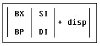
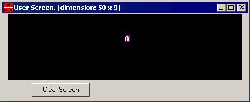

8086汇编语言初学者教程（第二部分）
寻址方式
我们可以通过下面的四个寄存器来寻址 BX, SI, DI, BP.
通过计算[]符号中的值,我们可以访问到不同内存单元的值。具体组合
请看下表：
[BX + SI]
[BX + DI]
[BP + SI]
[BP + DI]
|
[SI]
[DI]
d16 (variable offset only)
[BX]
|
[BX + SI] + d8
[BX + DI] + d8
[BP + SI] + d8
[BP + DI] + d8
|
[SI] + d8
[DI] + d8
[BP] + d8
[BX] + d8
|
[BX + SI] + d16
[BX + DI] + d16
[BP + SI] + d16
[BP + DI] + d16
|
[SI] + d16
[DI] + d16
[BP] + d16
[BX] + d16
|
d8 - 表示８位偏移量
d16 - 表示１６位偏移量
偏移量可以是一个立即数或者是一个变量的偏移，或者二者兼备。
这取决于编译器如何计算单独的立即数。
偏移量可以在［］符号里面或者外面，这不影响编译器生成相同的
机器码。
偏移量是一个有符号数，可以是正数或者负数。
一般说来，8位或者16位，对于编译后的结果是有影响的。
例如，假定 DS = 100, BX = 30, SI = 70。
如下寻址方式
[BX + SI] + 25 计算物理地址为
100 * 16 + 30 + 70 + 25 = 1725
默认下，DS 寄存器应用在除了BP寄存器之外的所有物理
地址计算中，寄存器是和SS寄存器一起工作的。
用过下面的表，你可以和轻松记住谁和谁是关联在一起使用的。

上表中，你可以从每一列中选择一个或者忽略任意一个列。比如，
可以看到，BX 和 BP始终不会选到一起。SI 和 DI不会选到一起。
这是一个计算地址模式[BX+5]
段寄存器(CS, DS, SS, ES) 中数值被称作 "段偏移" 。
目的寄存器(BX, SI, DI, BP) 中数值被称作"偏移量"比如,ds中数值为1234h，si中数值为7890h,可以记作
1234:7890 物理地址为 1234h * 10h + 7890h = 19BD0h
在编译过程中使用如下声明数据类型BYTE PTR - 表示字节
WORD PTR - 表示字（2个字节）
例如：
BYTE PTR [BX] ;按字节访问
or
WORD PTR [BX] ;按字访问
Emu8086 容许使用如下更简洁的前缀
b. - 等价于上面的 BYTE PTR
w. - 等价于上面的 WORD PTR
有时，编译器可以自动计算出数据类型，但是如果一个参与运算
的数是立即数，这种方法就不可靠了。
MOV
指令
-
将第二个操作数（源）拷贝到第一个操作数（目的）指定位值
-
源操作数可以是立即数，通用寄存器或者内存单元
-
目的寄存器可以是通用寄存器或者内存单元
-
源和目的必须是同样大小，要么都是字节要么都是字
操作类型如下:
MOV REG, memory
MOV memory, REG
MOV REG, REG
MOV memory, immediate
MOV REG, immediate
REG: AX, BX, CX, DX, AH, AL, BL, BH, CH, CL, DH, DL, DI, SI, BP, SP.
memory: [BX], [BX+SI+7],变量, 等等
immediate: 5, -24, 3Fh, 10001101b, 等等.
|
mov 指令只支持如下段寄存器：
MOV SREG, memory
MOV memory, SREG
MOV REG, SREG
MOV SREG, REG
SREG: DS, ES, SS, 注意 CS 只能作操作源
REG: AX, BX, CX, DX, AH, AL, BL, BH, CH, CL, DH, DL, DI, SI, BP, SP.
memory: [BX], [BX+SI+7], variable, 等等
|
MOV指令不能用来设置CS和IP寄存器的值。
下面是一个使用 MOV 指令的例子:
#MAKE_COM# ; 表示，这个是一个com程序
ORG 100h ;COM 程序必须的
MOV AX, 0B800h ; 将ax设置为 B800h.
MOV DS, AX ;
将 AX 值拷贝到 DS.
MOV CL, 'A' ;
将ASCII 码 'A'的值传送到cl,这个值是 41h.
MOV CH, 01011111b ;
将ch设置为二进制的01011111b
MOV BX, 15Eh ;
将 BX 设置成 15Eh.
MOV [BX], CX ;
将 CX 放到 bx 指出的内存单元 B800:015E
RET
;
返回操作系统
|
你可以将上面的程序贴入Emu8086代码编辑器，接下来按下
［complie and emulate] (或者按F5)
模拟窗口将显示这个程序已经调入，点击［single step］观察
寄存器数值变化。
你可以猜到 ";" 表示注释，编译器忽略在";"后面的一切
程序结束后，你可以看到如下窗口

事实上，上面程序是将字符直接写入显示内存。
通过上面的例子，你可以发现 MOV 指令是非常有用的。
<<< 上一部分 <<<
>>> 下一部分 >>>
|